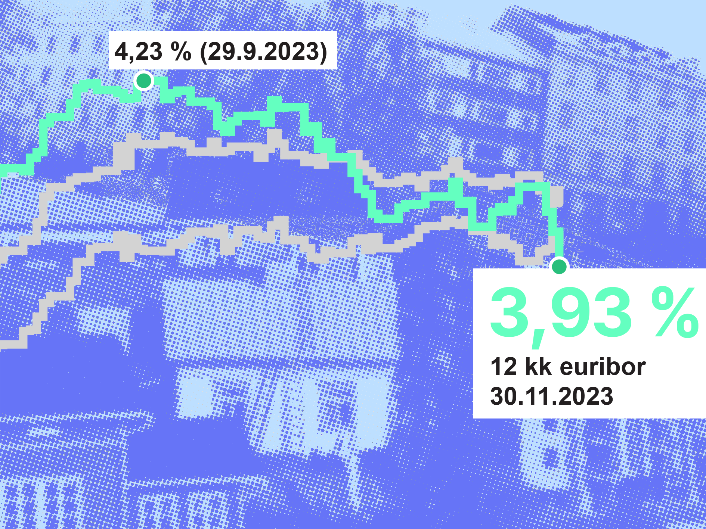

Asuntolainojen viitekorkona yleisesti käytetty 12 kuukauden euribor nousi tiistaina 4,208 prosenttiin maanantain 4,198 prosentista.
Euriborit nousivat vuonna 2022 erittäin nopeasti heijastellen muun muassa Euroopan inflaatiokehitystä ja keskuspankeilta odotettuja ohjauskoron nostoja.
Vuoden 2023 aikana sijoittajat ovat odottaneet ohjauskorkojen noston taittumista ja vaihtelevat näkemykset ovat aiheuttaneet sahaamista. Eri mittaisten euribor-korkojen tasojen läheneminen kertoo siitä, että sijoittajat odottavat joko koronnostosyklin päättyneen tai olevan lähellä.
Lyhyemmät korot käyttäytyivät tiistaina epäyhtenäisesti.
Kuuden kuukauden euribor noteerattiin 4,128 prosentissa, kun edellispäivän lukema oli 4,138 prosenttia. Kolmen kuukauden euribor nousi hiukan 3,964 prosenttiin edellispäivän 3,951 prosentista.
Euribor-korot lasketaan päivittäin kello 12 aikaan ja ne tulevat julkisiksi vuorokauden viiveellä.
Nopeissa raktaisuissa datawrapperilla saadaan kätevästi kaikki luvut näkyviin lukijalle
Alla versio - käsintehty infograafi. pohjat d3:lla --> illustratorilla käsin "zoomaus"-ruutu. Tarkistaisin ajatuksen jutun toimittajan kanssa, ja zoomaisin syys-marraskuun laskuun, jos jutun kärki voisi olla että 12kk euriborin lasku enteilee alempaa korkotasoa.